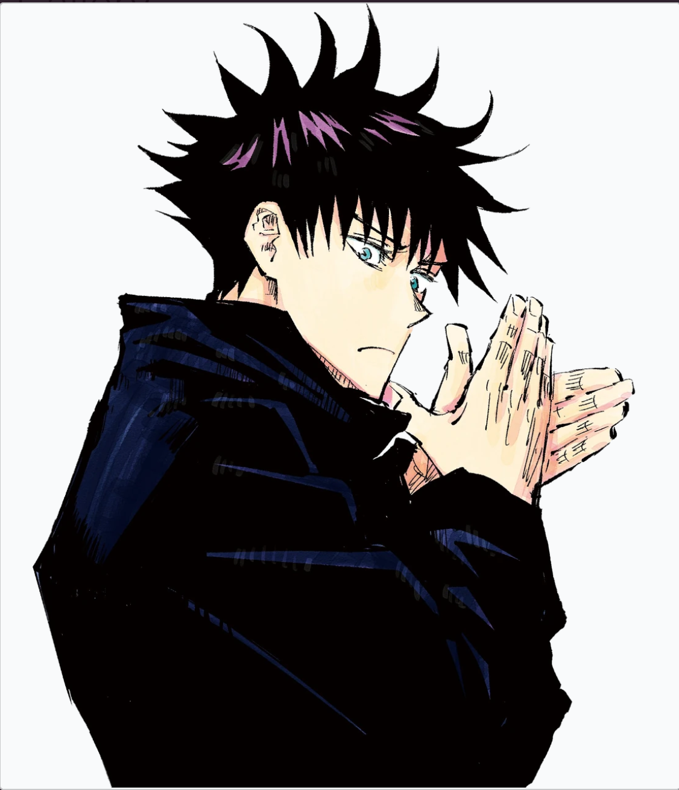
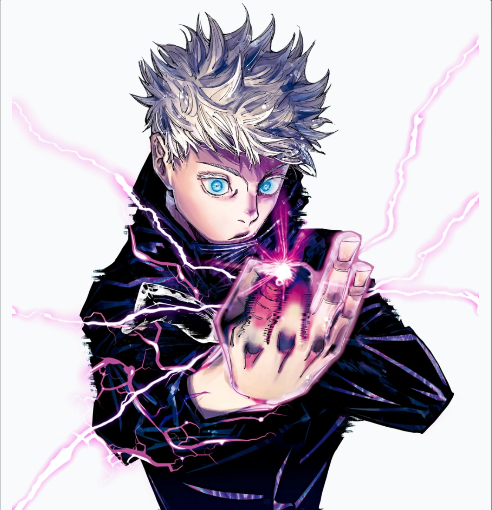
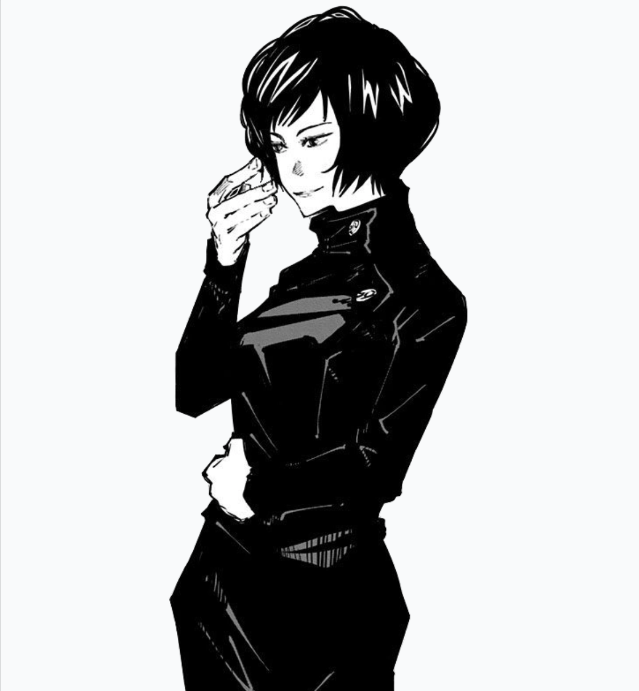
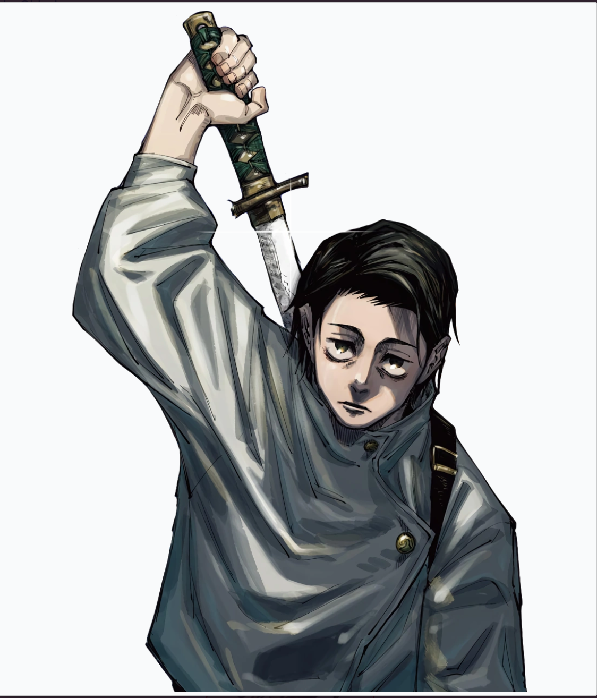

Jujutsu Kaisen Sorcerers
Explore a collection of sorcerers from the anime Jujutsu Kaisen.

Megumi Fushiguro
Grade 2First-year student at Tokyo Jujutsu High alongside Yuji Itadori and Nobara Kugisaki.

Yuji Itadori
Special GradeThe vessel of Sukana, Yuji attends Tokyo Jujutsu High.

Satoru Gojo
Special GradeRecognized as the strongest sorcerer in the world.

Mai Zenin
Grade 3The sister of Maki Zenin. She sacrificed herself to save her sister.

Yuta Okkotsu
Special GradeDistant relative to Satoru Gojo, Yuta possesses great power.